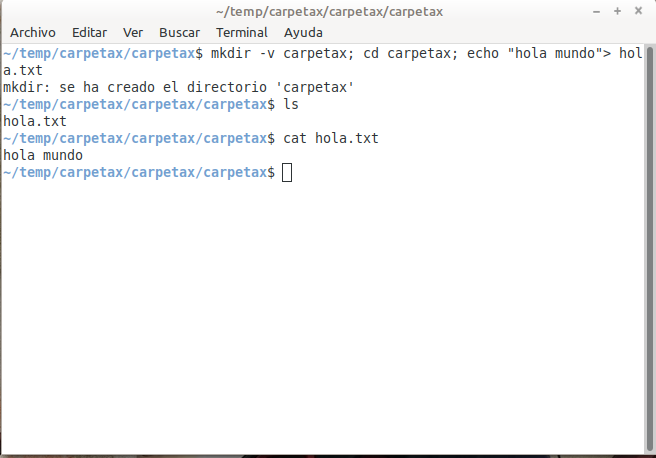
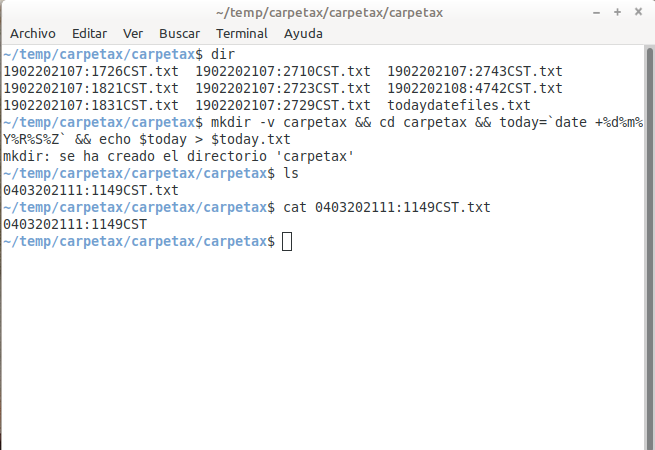
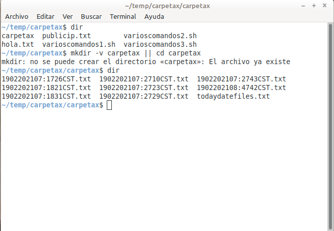

Ejecutar varios comandos en una instrucción¶
Siempre es útil saber cómo ejecutar varios comandos a la vez y, en estos ejemplos se mostrará como hacerlo. Los comandos linux son muchos y siguen apareciendo nuevos todo el tiempo, por tanto, al ejecutar y combinar a algunos de estos puede ser que tengan ciertos comportamientos inusuales al usarlos en una sola instrucción. También los comandos linux no todos son genéricos y habrá algunos que funcionen únicamente para algunas distros, para las cuales fueron desarrollados; asi que, se espera que un comando no tenga el mismo comportamiento en todas las distros existentes y por haber.
Operadores utilizados
Punto y coma (;), ejecutar todos los comandos en orden de izquierda a derecha sin importar si uno de ellos falla.
Ampersand (&), un único ampersand indica al comando que se ejecute en background (en segundo plano), lo normal es que los comandos se ejecuten en primer plano (foreground).
Ampersand (&&), ejecutar los comandos en orden de izquierda a derecha si y solo si el comando anterior se ejecuta satisfactoriamente, de lo contrario la instrucción se interrumpe y ya no sigue ejecutándose.
Pleca o barra vertical (|), una pleca individual significa que el resultado del primer comando ejecutado servirá como parámetro para el segundo comando, por tanto, si el primer comando no devuelve resultados, entonces el segundo comando no tendrá datos para ser utilizados y no se ejecutará.
Pleca o barra vertical (||), ejecuta solo uno de los comandos sin importar que se escriban varios comandos, estas dobles plecas buscan que se ejecute uno u otro comando; pero nunca ambos o todos los comandos escritos en la instrucción.
Ejemplo 1:
mkdir -v carpetax; cd carpetax; echo "hola mundo"> hola.txt
en este ejemplo creo una carpeta llamada “carpetax” (si existe dicha carpeta no la crea y pasa al siguiente comando), luego hago un “cd” a dicha carpeta para posteriormente crear un archivo llamado “hola.txt” con el contenido de “hola mundo” en él; el cual es creado en la carpeta antes creada.
Script que realiza la misma tarea del ejemplo 1:
#!/bin/bash
# Ejecutar varios comandos sin importar si uno falla
mkdir -v carpetax; cd carpetax; echo "hola mundo"> hola.txt
Recordar guardar el sript en un archivo llamado “varioscomandos1.sh” y darle permisos de ejecución con “$ chmod +x varioscomandos1.sh” y luego ejecutarlo con “$ ./varioscomandos1.sh”.
Ejemplo 2:
mkdir -v carpetax && cd carpetax && today=`date +%d%m%Y%R%S%Z` && echo $today > $today.txt
este es el mismo ejemplo 1, solamente con unos cambios sutiles. Si el directorio “carpetax” existe la instrucción se detiene y ya no sigue ejecutando el siguiente comando, esa es la función del ampersand (“&”) que se ejecuten los comandos si y solo si el anterior fue exitoso. La diferencia importante respecto al ejemplo 1 es que creo un archivo de texto conteniendo la fecha actual, el cual tendrá como nombre la fecha actual en el formato usado en mi país El Salvador que es: “DD-MM-AAAA:HHMMSS”; en otras palabras (Día del mes actual + mes actual + año actual + hora (formato 24 horas) + los minutos + los segundos + la zona horaria); ejemplo: “1502202110:1136CST” es la fecha actual al escribir estas líneas. No prestarle atención al comando “date”, lo escribiré en la documentación luego.
Script que realiza la misma tarea del ejemplo 2:
#!/bin/bash
# Ejecutar varios comandos si y solo si el anterior se ejecuta con éxito
mkdir -v carpetax && \
cd carpetax && \
today=`date +%d%m%Y%R%S%Z` && \
echo $today > $today.txt
Recordar guardar el sript en un archivo llamado “varioscomandos2.sh” y darle permisos de ejecución con “$ chmod +x varioscomandos2.sh” y luego ejecutarlo con “$ ./varioscomandos2.sh”.
Ejemplo 3:
mkdir -v carpetax || cd carpetax
en este ejemplo sino existe la “carpetax” el comando “mkdir” se ejecutará y la creará, pero si existe dicha carpeta entonces se ejecutará el comando “cd” y hará un “cd” a la carpeta en cuestión.
Script que realiza la misma tarea del ejemplo 3:
#!/bin/bash
# Ejecutar solo uno de los comandos que cumpla el criterio buscado
mkdir -v carpetax || cd carpetax
Recordar guardar el sript en un archivo llamado “varioscomandos3.sh” y darle permisos de ejecución con “$ chmod +x varioscomandos3.sh” y luego ejecutarlo con “$ ./varioscomandos3.sh”.
Combinación de operadores
Para aprovechar de la mejor manera la combinación de los comandos linux en una sola instrucción habrá que utilizar y combinar los diferentes operadores arriba descritos.
Ejemplo 4:
mkdir -v carpetax; cd carpetax && today=`date +%d%m%Y%R%S%Z` && echo $today > $today.txt
en este ejemplo me aseguro que la actividad principal (crear un archivo de texto con la fecha actual) se ejecute y no sea interrumpida por algún comando que no sea exitoso.
Script que realiza la misma tarea del ejemplo 4:
#!/bin/bash
# Ejecutar varios comandos
mkdir -v carpetax; cd carpetax && \
today=`date +%d%m%Y%R%S%Z` && \
echo $today > $today.txt
Recordar guardar el sript en un archivo llamado “varioscomandos4.sh” y darle permisos de ejecución con “$ chmod +x varioscomandos4.sh” y luego ejecutarlo con “$ ./varioscomandos4.sh”.
Ejemplo 5:
mkdir -v carpetax; cd carpetax && today=`date +%d%m%Y%R%S%Z` && echo $today > $today.txt && find | sort -n > todaydatefiles.txt
este es el mismo ejemplo 4, con la diferencia que creo otro archivo de texto que contiene todos los archivos de texto con la fecha actual antes creados y el que se acaba de crear.
Script que realiza la misma tarea del ejemplo 5:
#!/bin/bash
# Ejecutar varios comandos
mkdir -v carpetax; cd carpetax && \
today=`date +%d%m%Y%R%S%Z` && \
echo $today > $today.txt && find | sort -n > todaydatefiles.txt
Recordar guardar el sript en un archivo llamado “varioscomandos5.sh” y darle permisos de ejecución con “$ chmod +x varioscomandos5.sh” y luego ejecutarlo con “$ ./varioscomandos5.sh”.
Ejemplo 6:
publicip=`wget -qO- http://ipecho.net/plain; echo` && today=`date +%d%m%Y%R%S%Z` && echo $publicip$today >> publicip.txt
en este ejemplo creo una variable temporal “publicip” que me almacena la ip pública que está usando mi computadora y le digo que la guarde en un archivo de texto; además le agrego la fecha actual en otra variable “today” y le digo que la guarde en una sola línea en un archivo de texto llamado “publicip.txt” (si existe el archivo solo insertará una línea con los datos y si no existe lo creará y le insertará los valores de las dos variables temporales).
Script que realiza la misma tarea del ejemplo 6:
#!/bin/bash
# Ejecutar varios comandos
publicip=`wget -qO- http://ipecho.net/plain; echo` && \
today=`date +%d%m%Y%R%S%Z` && \
echo $publicip$today >> publicip.txt
Recordar guardar el sript en un archivo llamado “varioscomandos6.sh” y darle permisos de ejecución con “$ chmod +x varioscomandos6.sh” y luego ejecutarlo con “$ ./varioscomandos6.sh”.